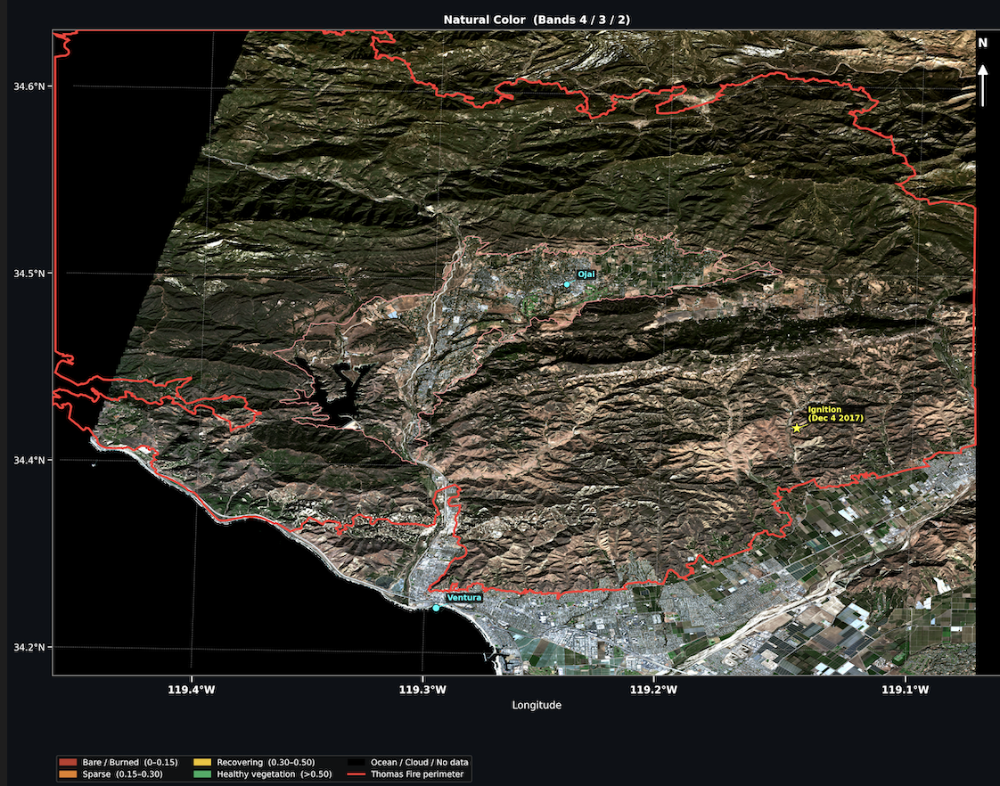
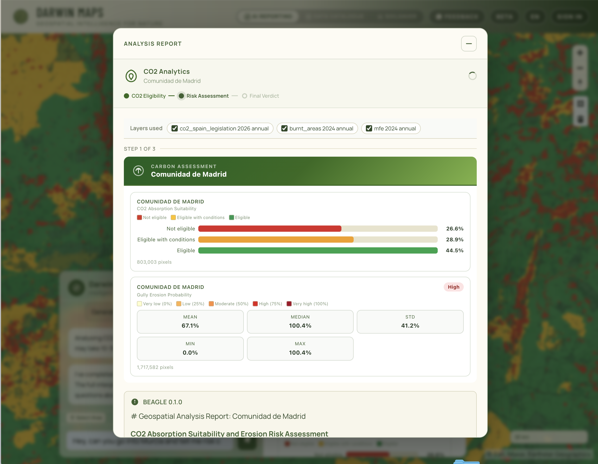
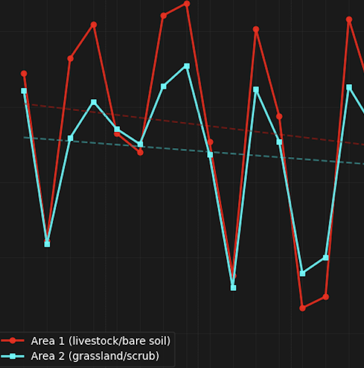
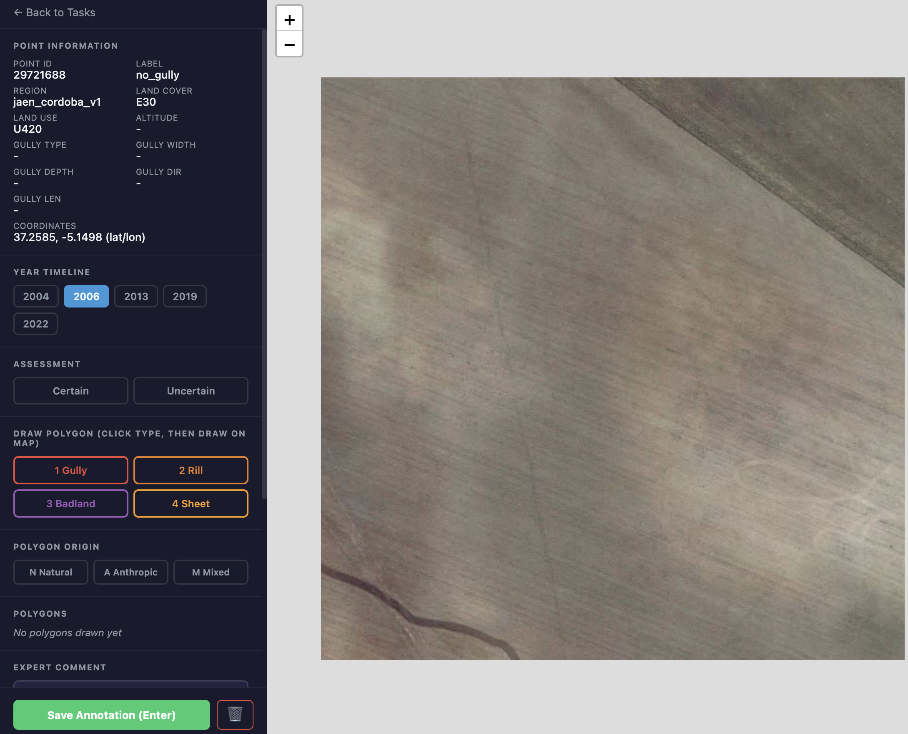
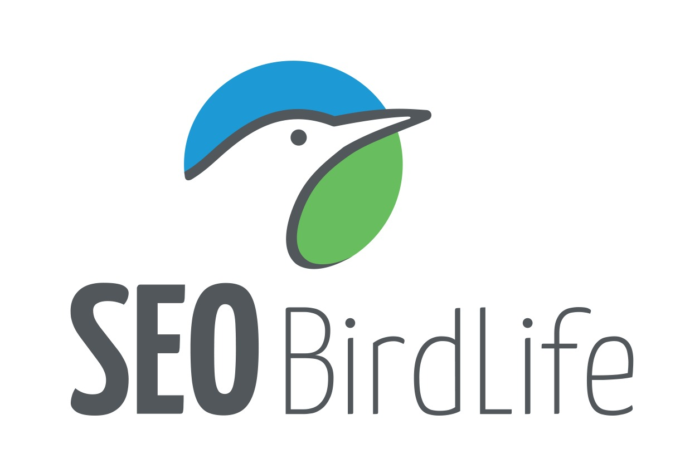
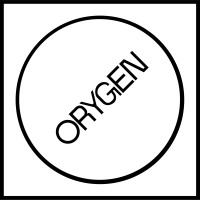
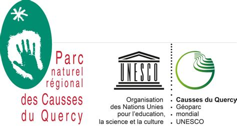

Darwin Maps
Visor geoespacial interactivo con inteligencia artificial para el análisis del territorio. Capas ambientales, análisis por provincias y un asistente Geo AI que interpreta el paisaje por ti.
Somos
Darwin
Geospatial
Usamos datos geoespaciales e inteligencia artificial para transformar cómo se estudian, monitorean y gestionan los sistemas naturales, desde bosques y paisajes rurales hasta entornos urbanos.




Confían en nosotros



Visor geoespacial interactivo con inteligencia artificial para el análisis del territorio. Capas ambientales, análisis por provincias y un asistente Geo AI que interpreta el paisaje por ti.
Plataforma geoespacial para monitorear el carbono orgánico del suelo y rastrear 70 años de degradación edáfica a escala de parcela. Explora el antes y el después de la Tierra a través de una experiencia visual de scrollytelling única.
La plataforma de referencia para visualizar rutas de esquí en la sierra de Guadarrama.
Somos partners de la iniciativa End World Hunger Ohio, un jardín comunitario en Franklin Park, Columbus, que impulsa la soberanía alimentaria a través de la agricultura regenerativa.
¿Listo para transformar tus datos?
Agenda una ConsultaSolo apoyamos proyectos que tienen un impacto positivo y directo en la naturaleza. Creemos que los datos son la piedra angular de una gestión eficaz, y los datos espaciales proporcionan la dimensión más poderosa.
El mayor impacto proviene de la colaboración. Crear sinergias entre sectores, desde el turismo hasta la silvicultura, nos permite diseñar las mejores soluciones para las personas y el planeta.
Desarrollamos y entrenamos nuestros propios modelos de IA para garantizar que comprendan verdaderamente los sistemas naturales con los que trabajamos.
Fundador y líder técnico de Darwin Geospatial. Líder en datos e IA con experiencia internacional en Silicon Valley en la industria de finanzas de cadena de suministro y recursos naturales.
Socio - Analista Geoespacial
Ingeniero Forestal y Analista Geoespacial con experiencia internacional en gestión ambiental y modelización espacial. Ha trabajado con el OAPN y en investigaciones sobre prácticas agrícolas sostenibles.

Asesor - GTM
Líder tecnológico y asesor enfocado en construir herramientas que ayudan a las personas y protegen el planeta. Aporta experiencia en IA centrada en el humano, tecnología geoespacial y trabajo ambiental comunitario.
Data Ops & Software
Ingeniero de software especializado en infraestructura y operaciones de datos. Experiencia en sistemas Linux, automatización de pipelines y arquitectura backend para aplicaciones escalables.
AI & Software
Ingeniero Informático con Máster en Inteligencia Artificial. Especializado en aprendizaje automático y análisis de datos a escala, desarrollando modelos predictivos y sistemas de procesamiento inteligente.
Doctor por la Universidad Rey Juan Carlos (URJC). Graduado en Ingeniería Aeroespacial e Ingeniería de Telecomunicaciones, con Máster en Investigación en Inteligencia Artificial y Doctorado en Tecnologías de la Información y las Comunicaciones. Su investigación se centra en el procesamiento de señales sobre grafos, redes neuronales en grafos y aprendizaje automático.
Complete el siguiente formulario o envíenos un correo electrónico a contact@darwingeospatial.com